인간공학기사 (2017-08-26 기출문제)
1과목: 인간공학개론
1. 음의 한 성분이 다른 성분의 청각 감지를 방해하는 현상을 무엇이라 하는가?
- 밀폐효과
- 은폐효과
- 소멸효과
- 방해효과
(정답률: 90%)

2. 인간의 시식별 능력에 영향을 주는 외적 인자와 가장 거리가 먼 것은?
- 휘도
- 과녁의 이동
- 노출시간
- 최소분간 시력
(정답률: 63%)
3. 코드화 시스템 사용상의 일반적인 지침과 가장 거리가 먼 것은?
- 정보를 코드화한 자극은 검출이 가능해야 한다.
- 2가지 이상의 코드차원을 조합해서 사용하면 정보전달이 촉진된다.
- 자극과 반응간의 관계가 인간의 기대와 모순되지 않아야 한다.
- 모든 코드 표시는 감지장치에 의하여 다른 코드 표시와 구별되어서는 안된다.
(정답률: 83%)
4. 시배분(time-sharing)에 대한 설명으로 적절하지 않은 것은?
- 시배분이 요구되는 경우 인간의 작업능률은 떨어진다.
- 청각과 시각이 시배분 되는 경우에는 일반적으로 시각이 우월하다.
- 시배분 작업은 처리해야 하는 정보의 가지수와 속도에 의하여 영향을 받는다.
- 음악을 들으며 책을 읽는 것처럼 동시에 2가지 이상을 수행해야 하는 상황을 의미한다.
(정답률: 77%)
5. 제품, 공구, 장비 등의 설계 시에 적용하는 인체측정 자료의 응용원칙에 해당하지 않는 것은?
- 조절식 설계
- 기계식 설계
- 극단값을 기준으로 한 설계
- 평균값을 기준으로 한 설계
(정답률: 80%)
6. 실현 가능성이 같은 N개의 대안이 있을 때 총 정보량(H)을 구하는 식으로 맞는 것은?
- H=logN2
- H=log2N
- H=2logN2
- H=log2N
(정답률: 63%)
7. 효율적인 공간의 배치를 위하여 적용되는 원리와 가장 거리가 먼 것은?
- 중요도의 원리
- 사용빈도의 원리
- 사용순서의 원리
- 작업방법의 원리
(정답률: 82%)
8. 인간-기계 시스템의 설계원칙으로 가장 거리가 먼 것은?
- 인간의 신체적 특성에 적합하여야 한다.
- 시스템은 인간의 예상과 양립하여야 한다.
- 기계의 효율과 같은 경제적 원칙을 우선시한다.
- 계기반이나 제어장치의 중요성, 사용빈도, 사용순서, 기능에 따라 배치가 이루어져야 한다.
(정답률: 88%)
9. 인체치수 데이터가 개인에 따라 차이가 발생하는 요인과 가장 거리가 먼 것은?
- 나이
- 성별
- 인종
- 작업환경
(정답률: 74%)
10. 인간의 오류모형에 있어 상황이나 목표해석은 제대로 하였으나 의도와는 다른 행동을 하는 경우에 발생하는 오류는?
- 실수(slip)
- 착오(mistake)
- 위반(violation)
- 건만증(forgetfulness)
(정답률: 72%)
11. 인간의 후각 특성에 대한 설명으로 틀린 것은?
- 후각은 청각에 비해 반응속도가 더 빠르다.
- 훈련을 통하면 식별 능력을 향상시킬 수 있다.
- 특정한 냄새에 대한 절대적 식별 능력은 떨어진다.
- 후각은 특정 물질이나 개인에 따라 민감도에 차이가 있다.
(정답률: 91%)
12. 통계적 분석에서 사용되는 제1종 오류를 설명한 것으로 틀린 것은?
- 1-α를 검출력(power)이라고 한다.
- 제1종 오류를 통계적 기각역이라고도 한다.
- 발견한 결과가 우연에 의한 것일 확률을 의미한다.
- 일한 데이터의 분석에서 제1종 오류를 작게 설정할수록 제2종 오류가 증가할 수 있다.
(정답률: 62%)
13. 어떤 물체나 표면에 도달하는 빛의 밀도를 무엇이라 하는가?
- 시력
- 순응
- 조도
- 간상체
(정답률: 92%)
14. 인간공학의 연구 목적과 가장 거리가 먼 것은?
- 인간오류의 특성을 연구하여 사고를 예방
- 인간의 특성에 적합한 기계나 도구의 설계
- 병리학을 연구하여 인간의 질병퇴치에 기여
- 인간의 특성에 맞는 작업환경 및 작업방법의 설계
(정답률: 90%)
15. 정상조명 하에서 5m 거리에서 볼 수 있는 원형 바늘 시계를 설계하고자 한다. 시계의 눈금단위를 1분 간격으로 표시하고자 할 때, 권장되는 눈금간의 간격은 최소 몇 mm정도인가?
- 9.15
- 18.31
- 45.75
- 91.55
(정답률: 41%)
16. 표시장치와 제어장치를 포함하는 작업장을 설계할 때 우선 고려사항에 해당되지 않는 것은?
- 작업시간
- 제어장치와 표시장치와의 관계
- 주 시각 임무와 상호작용하는 주제어장치
- 자주 사용되는 부품을 편리한 위치에 배치
(정답률: 68%)
17. sone과 phon에 대한 설명으로 틀린 것은?
- 20phon은 0.5sone 이다.
- 10phon은 증가시마다 sone의 2배가 된다.
- phon은 1000Hz 순음과의 상대적인 음량비교이다.
- phon은 음량과 주파수를 동시에 고려하여 도출된 수치이다.
(정답률: 60%)
18. 신호검출이론(SDT)에서 신호의 유무를 판별함에 있어 4가지 반응 대안에 해당하지 않는 것은?
- 긍정(Hit)
- 채택(Acceptation)
- 누락(Miss)
- 허위(False alarm)
(정답률: 72%)
19. 선형 제어장치를 20cm 이동시켰을 때 선형표시장치에서 지침이 5cm 이동 되었다면, 제어반응(C/R)비는 얼마인가?
- 0.2
- 0.25
- 4.0
- 5.0
(정답률: 64%)
20. Norman이 제시한 사용자 인터페이스 설계원칙에 해당하지 않는 것은?
- 가시성(Visibility)의 원칙
- 피드백(feedback)의 원칙
- 양립성(compatibility)의 원칙
- 유지보수 경제성(maintenance economy)의 원칙
(정답률: 78%)
2과목: 작업생리학
21. 다음 그림과 같이 작업할 때 팔꿈치의 반작용력과 모멘트의 값은 얼마인가? (단, CG1은 물체의 무게중심, CG2는 하박의 무게중심, W1은 물체의 하중, W2는 하박의 하중이다.)
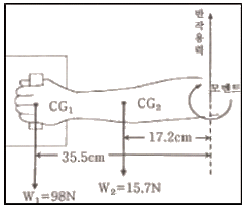
- 반작용력 : 79.3N, 모멘트 : 22.42N∙m
- 반작용력 : 79.3N, 모멘트 : 37.5N∙m
- 반작용력 : 113.7N, 모멘트 : 22.42N∙m
- 반작용력 : 113.7N, 모멘트 : 37.5N∙m
(정답률: 56%)
22. 광원으로부터의 직사 휘광 처리가 틀린 것은?
- 가리개, 갓, 차양을 사용한다.
- 광원을 시선에서 멀리 위치시킨다.
- 광원의 휘도를 높이고 수를 줄인다.
- 휘광원 주위를 밝게 하여 광도비를 줄인다.
(정답률: 61%)
23. 교대작업의 주의사항에 관한 설명으로 틀린 것은?
- 12시간 교대제가 적정하다.
- 야간근무는 2~3일 이상 연속하지 않는다.
- 야간근무의 교대는 심야에 하지 않도록 한다.
- 야간근무 종료 후에는 48시간 이상의 휴식을 갖도록 한다.
(정답률: 88%)
24. 산업안전보건법령상 소음작업이란 1일 8시간작업을 기준으로 몇 데시벨 이상의 소음이 발생하는 작업을 말하는가?
- 75
- 80
- 85
- 90
(정답률: 78%)
25. 골격근(skeletel muscle)에 대한 설명으로 틀린 것은?
- 골격근은 체중의 약 40%를 차지하고 있다.
- 골격근은 건(tendon)에 의해 뼈에 붙어 있다.
- 골격근의 기본구조는 근원섬유(myofibril)이다.
- 골격근은 400개 이상이 신체 양쪽에 쌍으로 있다.
(정답률: 62%)
26. 소음에 의한 청력손실이 가장 심하게 발생할 수 있는 주파수는?
- 1000 Hz
- 4000 Hz
- 10000 Hz
- 20000 Hz
(정답률: 88%)
27. 생리적 활동의 척도 중 Borg의 RPE(Ratings of Perceived Exertion)척도에 대한 설명으로 틀린 것은?
- 육체적 작업부하의 주관적 평가방법이다.
- NASA-TLX와 동일한 평가척도를 사용한다.
- 척도의 양끝은 최소 심장 박동수와 최대 심장 박동수를 나타낸다.
- 작업자들이 주관적으로 지각한 신체적 노력의 정도를 6~20 사이의 척도로 평가한다.
(정답률: 66%)
28. 근육 운동에 있어 장력이 활발하게 생기는 동안 근육이 가시적으로 단축되는 것을 무엇이라 하는가?
- 연축(twitch)
- 강축(tenanus)
- 원심성 수축(eccentric contraction)
- 구심성 수축(concentric contraction)
(정답률: 58%)
29. 저온 스트레스의 생리적 영향에 대한 설명 중 틀린 것은?
- 저온 환경에 노출되면 혈관수축이 발생한다.
- 저온 환경에 노출되면 발한(發汗)이 시작된다.
- 저온 스트레스를 받으면 피부가 파랗게 보인다.
- 저온 환경에 노출되면 떨기반사(shivering reflex)가 나타난다.
(정답률: 78%)
30. 인체활동이나 작업종료 후에도 체내에 쌓인 젖산을 제거하기 위해 산소가 더 필요하게 되는데 이를 무엇이라 하는가?
- 산소 빚(oxygen debt)
- 산소 값(oxygen value)
- 산소 피로(oxygen fatigue)
- 산소 대사(oxygen metabolism)
(정답률: 83%)
31. 윤환관절(synovial joint)인 팔굽관절(elbow joint)은 연결 형태를 기준으로 어느 관절에 해당되는가?
- 관절구(condyloid)
- 경첩관절(hinge joint)
- 안장관절(saddle joint)
- 구상관절(ball and socket joint)
(정답률: 77%)
32. 근력에 관련된 설명 중 틀린 것은?
- 여성의 평균 근력은 남성의 약 65% 정도이다.
- 50세가 지나면 서서히 근력이 감소하기 시작한다.
- 성별에 관계없이 25~35세에서 근력이 최고에 도달한다.
- 운동을 통해서 약 30~40%의 근력증가효과를 얻을 수 있다.
(정답률: 74%)
33. 중량물 취급 시 쪼그려 앉아(squat) 들기와 등을 굽혀(stoop) 들기를 비교할 경우 에너지 소비량에 영향을 미치는 인자 중 가장 관련이 깊은 것은?
- 작업 자세
- 작업 방법
- 작업 속도
- 도구 설계
(정답률: 82%)
34. 생체반응 측정에 관한 설명으로 틀린 것은?
- 혈압은 대동맥에서의 압력을 의미한다.
- 심전도는 P, Q, R, S, T 파로 구성된다.
- 1리터의 산소 소비는 4kcal 의 에너지 소비와 같다.
- 중간 정도의 작업에서 나타나는 심장박동률은 산소소비량과 선형적인 관계가 있다.
(정답률: 73%)
35. 신체에 전달되는 진동은 전신진동과 국소진동으로 구분되는데 진동원의 성격이 다른 것은?
- 크레인
- 대형 운송차량
- 지게차
- 휴대용 연삭기
(정답률: 89%)
36. 위치(positioning) 동작에 관한 설명으로 틀린 것은?
- 반응시간은 이동거리와 관계없이 일정하다.
- 위치동작의 정확도는 그 방향에 따라 달라진다.
- 오른손의 위치동작은 우하-좌상 방향의 정확도가 높다.
- 주로 팔꿈치의 선회로만 팔 동작을 할 때가 어깨를 많이 움직일 때보다 정확하다.
(정답률: 59%)
37. 200cd 인 점광원으로부터의 거리가 2m 떨어진 곳에서의 조도는 몇 럭스인가?
- 50
- 100
- 200
- 400
(정답률: 66%)
38. 뇌파와 관련된 내용이 맞게 연결된 것은?
- α파 : 2~5Hz로 얕은 수면상태에서 증가한다.
- β파 : 5~10Hz로 불규칙적인 파동이다.
- θ파 : 14~30Hz로 고(高)진폭파를 의미한다.
- δ파 : 4Hz 미만으로 깊은 수면상태에서 나타난다.
(정답률: 67%)
39. 호흡계의 기본적인 기능과 가장 거리가 먼 것은?
- 가스교환 기능
- 산-염기조절 기능
- 영양물질 운반 기능
- 흡입된 이물질 제거 기능
(정답률: 56%)
40. 육체 활동에 따른 에너지소비량이 가장 큰 것은?
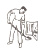
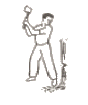
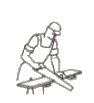
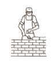
(정답률: 78%)
3과목: 산업심리학 및 관계법규
41. 사고의 특성에 해당되지 않는 사항은?
- 사고의 시간성
- 사고의 재현성
- 우연성 중의 법칙성
- 필연성 중의 우연성
(정답률: 62%)
42. 스트레스 요인에 관한 설명으로 틀린 것은?
- 성격유형에서 A형 성격은 B형 성격보다 스트레스를 많이 받는다.
- 일반적으로 내적 통제자들은 외적 통제자들보다 스트레스를 많이 받는다.
- 역할 과부하는 직무기술서가 분명치 않은 관리직이나 전문직에서 더욱 많이 나타난다.
- 집단의 압력이나 행동적 규범은 조직구성원에게 스트레스와 긴장의 원인으로 작용할 수있다.
(정답률: 74%)
43. 웨버(Max Weber)가 제창한 관료주의에 관한 설명으로 틀린 것은?
- 노동의 분업화를 전제로 조직을 구성한다.
- 부서장들의 권한 일부를 수직적으로 위임하도록 했다.
- 단순한 계층구조로 상위리더의 의사결정이 독단화되기 쉽다.
- 산업화 초기의 비규범적 조직운영을 체계화시키는 역할을 했다.
(정답률: 60%)
44. 인간실수와 관련된 설명으로 틀린 것은?
- 생활변화 단위 이론은 사고를 촉진시킬 수 있는 상황인자를 측정하기 위하여 개발되었다.
- 반복사고자 이론이란 인간은 개인별로 불변의 특성이 있으므로 사고는 일으키는 사람이 계속 일으킨다는 이론이다.
- 인간성능은 각성수준(arousal level)이 낮을수록 향상되므로 실수를 줄이기 위해서는 각성수준을 가능한 낮추도록 한다.
- 피터슨의 동기부여-보상-만족모델에 따르면, 작업자의 동기부여에는 작업자의 능력과 작업분위기, 그리고 작업 수행에 따른 보상에 대한 만족이 큰 영향을 미친다.
(정답률: 84%)
45. FTA에서 입력사상 중 어느 하나라도 발생하면 출력사상이 발생되는 논리게이트는?
- OR gate
- AND gate
- NOT gate
- NOR gate
(정답률: 85%)
46. 리더십 이론 중 관리 그리드 이론에서 인간관계의 유지에는 낮은 관심을 보이지만 과업에 대해서는 높은 관심을 보이는 유형은?
- 인기형
- 과업형
- 타협형
- 무관심형
(정답률: 84%)
47. 매슬로우(Maslow)가 제시한 욕구 단계에 포함되지 않는 것은?
- 안전 욕구
- 존경의 욕구
- 자아실현의 욕구
- 감성적 욕구
(정답률: 85%)
48. 갈등 해결방안 중 자신의 익이나 상대방의 이익에 모두 무관심한 것은?
- 경쟁
- 순응
- 타협
- 회피
(정답률: 83%)
49. 지능과 작업간의 관계를 설명한 것으로 가장 적절한 것은?
- 작업수행자의 지능이 높을수록 바람직하다.
- 작업수행자의 지능과 사고율 사이에는 관계가 없다.
- 각 작업에는 그에 적정한 지능수준이 존재한다.
- 작업특성과 작업자의 지능 간에는 특별한 관계가 없다.
(정답률: 82%)
50. 하인리히(Heinrich)의 재해발생이론에 관한 설명으로 틀린 것은?
- 사고를 발생시키는 요인에는 유전적 요인도 포함된다.
- 일련의 재해요인들이 연쇄적으로 발생한다는 도미노 이론이다.
- 일련의 재해요인들 중 하나만 제거하여도 재해예방이 가능하다.
- 불안전한 행동 및 상태는 사고 및 재해의 간적원인으로 작용한다.
(정답률: 77%)
51. 집단 내에서 권한의 행사가 외부에 의하여 선출, 임명된 지도자에 의해 이루어지는 것은?
- 멤버십
- 헤드십
- 리더십
- 매니저십
(정답률: 75%)
52. 상시근로자 1000명이 근무하는 사업장의 강도율이 0.6이었다. 이 사업장에서 재해발생으로 인한 연간 총 근로 손실일수는 며칠인가? (단, 근로자 1인당 연간 2400시간을 근무하였다.)
- 1220일
- 1320일
- 1440일
- 1630일
(정답률: 72%)
53. 대뇌피질의 활성 정도를 측정하는 방법은?
- EMG
- EOG
- ECG
- EEG
(정답률: 70%)
54. 직무수행 준거 중 한 개인의 근무연수에 따른 변화가 비교적 적은 것은?
- 사고
- 결근
- 이직
- 생산성
(정답률: 66%)
55. NIOSH의 직무 스트레스 관리 모형에 관한 설명으로 틀린 것은?
- 직무 스트레스 요인에는 크게 작업 요인, 조직 요인 및 환경 요인으로 구분된다.
- 똑같은 작업스트레스에 노출된 개인들은 스트레스에 대한 지각과 반응에서 차이를 보이지 않는다.
- 조직 요인에 의한 직무 스트레스에는 역할모호성, 열할 갈등, 의사 결정에의 참여도, 승진 및 직무의 불안정성 등이 있다.
- 작업 요인에 의한 직무 스트레스에는 작업부하, 작업속도 및 작업과정에 대한 작업자의 통제정도, 교대근무 등이 포함된다.
(정답률: 81%)
56. 어떤 사업장의 생산라인에서 완제품을 검사하는데, 어느 날 5000개의 제품을 검사하여 200개를 부적합품으로 처리하였으나 이 로트에 실제로 1000개의 부적합품이 있었을 때, 로트당 휴먼에러를 범하지 않을 확률은 약 얼마인가?
- 0.16
- 0.20
- 0.80
- 0.84
(정답률: 36%)
57. 휴먼 에러(Human Error) 예방 대책이 아닌 것은?
- 무결점에 대한 대책
- 관리요인에 대한 대책
- 인적 요인에 대한 대책
- 설비 및 작업환경적 요인에 대한 대책
(정답률: 76%)
58. 새로운 작업을 수행할 때 근로자의 실수를 예방하고 정확한 동작을 위해 다양한 조건에서 연습한 결과로 나타나는 것은?
- 상기 스키마(Recall Schema)
- 동작 스키마(Motion Schema)
- 도구 스키마(Instrument Schema)
- 정보 스키마(Information Schema)
(정답률: 62%)
59. 호손(Hawthorne)의 연구 결과에 기초한다면 작업자의 작업능률에 영향을 미치는 주요한 요인은?
- 작업조건
- 생산방식
- 인간관계
- 작업자 특성
(정답률: 83%)
60. 물품의 중량과 무게중심에 대하여 작업장 주변에 안내표지를 해야 하는 중량물의 기준은?
- 5 kg 이상
- 10 kg 이상
- 15 kg 이상
- 20 kg 이상
(정답률: 70%)
4과목: 근골격계질환 예방을 위한 작업관리
61. 다양한 작업 자세의 신체전반에 대한 부담정도를 분석하는데 적합한 기법은?
- JSI
- QEC
- NLE
- REBA
(정답률: 68%)
62. 표준자료법에 대한 설명 중 틀린 것은?
- 표준 자료 작성은 초기 비용이 적기 때문에 생산량이 적은 경우에 유리하다.
- 일단 한번 작성되면 유사한 작업에 대한 신속한 표준시간 설정이 가능하다.
- 작업조건이 불안정하거나 표준화가 곤란한 경우에는 표준자료 설정이 곤란하다.
- 정미시간을 종속변수, 작업에 영향을 주는 요인을 독립변수를 취급하여 두 변수 사이의 함수관계를 바탕으로 표준시간을 구한다.
(정답률: 81%)
63. 작업자가 동종의 기계를 복수로 담당하는 경우, 작업자 한 사람이 담당해야 할 이론적인 기계대수(n)를 구하는 식으로 맞는 것은? (단, a는 작업자와 기계의 동시 작업시간의 총 합, b는 작업자만의 총 작업시간, t는 기계만의 총 가동시간이다.)
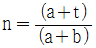
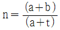
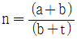
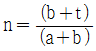
(정답률: 73%)
64. 워크샘플링 조사에서 주요작업의 추정비율(p)이 0.06이라면 99% 신뢰도를 위한 워크샘플링 횟수는 몇 회인가? (단, μ0.0⑤는 2.58, 허용오차는 0.01이다.)
- 3744
- 3755
- 3764
- 3745
(정답률: 49%)
65. 공정도(process chart)에 사용되는 기호와 명칭이 잘못 연결된 것은?
- : 저장
- : 운반
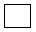
: 검사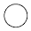
: 작업
(정답률: 78%)
66. 개선의 ECRS에 대한 내용으로 맞는 것은?
- Economic - 경제성
- Combine - 결합
- Reduce - 절감
- Specification - 규격
(정답률: 74%)
67. NIOSH의 들기 지수에 관한 설명으로 틀린 것은?
- 들기 지수는 요추의 디스크 압력에 대한 기준치이다.
- 들기 횟수는 분당 들기 횟수를 기준으로 설정되어 있다.
- 들기 지수가 1이상이 경우 추천 무게를 넘는 것으로 간주한다.
- 들기 자세는 수평거리, 수직거리, 이동거리의 3개 요인으로 계산한다.
(정답률: 60%)
68. 어떤 결과에 영향을 미치는 크고 작은 요인들을 계통적으로 파악하기 위한 작업분석 도구로 적합한 것은?
- PERT/CPM
- 간트 차트
- 파레토 차트
- 특성요인도
(정답률: 60%)
69. 팔꿈치 부위에 발생하는 근골격계 질환의 유형에 해당하는 것은?
- 외상 과염
- 수근관 증후군
- 추간판 탈출증
- 바르텐베르그 증후군
(정답률: 80%)
70. 관측평균은 1분, Rating 계수는 120%, 여유시간은 0.⑤분이다. 내경법에 의한 여유율과 표준시간은?
- 여유율 : 4.0%, 표준시간 : 1.⑤분
- 여유율 : 4.0%, 표준시간 : 1.25분
- 여유율 : 4.2%, 표준시간 : 1.⑤분
- 여유율 : 4.2%, 표준시간 : 1.25분
(정답률: 54%)
71. 시설배치방법 중 공정별 배치방법의 장점에 해당하는 것은?
- 운반 길이가 짧아진다.
- 작업진도의 파악이 용이하다.
- 전문적인 작업지도가 용이하다.
- 제공품이 적고, 생산길이가 잛아진다.
(정답률: 65%)
72. 근골격계 부담작업 유해요인 조사와 관련하여 틀린 것은?
- 사업주는 유해요인조사에 근로자 대표 또는 해당 작업 근로자를 참여시켜야 한다.
- 유해요인조사의 내용은 작업장 상황, 작업조건, 근골격계 질환 증상 및 징후를 포함한다.
- 신설되는 사업장의 경우에는 신설일로부터 2년 이내에 최초 유해요인 조사를 실시하여야 한다.
- 유해요인조사는 매3년마다 실시되는 정기적 조사와 특정한 사유가 발생 시 실시하는 수시조사가 있다.
(정답률: 80%)
73. 레이팅 방법 중 Westinghouse 시스템은 4가지 측면에서 작업자의 수행도를 평가하여 합산하는데 이러한 4가지에 해당하지 않는 것은?
- 노력
- 숙련도
- 성별
- 작업환경
(정답률: 40%)
74. 근골격계 질환의 원인으로 가장 거리가 먼 것은?
- 작업 특성 요인
- 개인적 특성 요인
- 사회 심리적인 요인
- 법률적인 기준에 따른 요인
(정답률: 80%)
75. 근골격계 질환의 예방 대책으로 적절한 내용이 아닌 것은?
- 질환자에 대한 재활프로그램 및 산업재해 보험의 가입
- 충분한 휴식시간의 제공과 스트레칭 프로그램의 도입
- 적절한 공구의 사용 및 올바른 작업방법에 대한 작업자 교육
- 작업자의 신체적 특성과 작업내용을 고려한 작업장 구조의 인간공학적 개선
(정답률: 85%)
76. 사업장 근골격계 질환 예방관리 프로그램에 있어 예방∙관리추진팀의 역할이 아닌 것은?
- 교육 및 훈련에 관한 사항을 결정하고 실행한다.
- 예방∙관리 프로그램의 수립 및 수정에 관한 사항을 결정한다.
- 근골격계 질환의 증상∙유해요인 보고 및 대응체계를 구축한다.
- 유해요인 평가 및 개선계획의 수립과 시행에 관한 사항을 결정하고 실행한다.
(정답률: 66%)
77. 작업관리에서 사용되는 기본형 5단계 문제해결 절차로 가장 적절한 것은?
- 자료의 검토→연구대상선정→개선안의 수립→분석과 기록→개선안의 도입
- 자료의 검토→연구대상선정→분석과 기록→개선안의 수립→개선안의 도입
- 연구대상선정→자료의 검토→분석과 기록→개선안의 수립→개선안의 도입
- 연구대상선정→분석과 기록→자료의 검토→개선안의 수립→개선안의 도입
(정답률: 40%)
78. 동작분석을 할 때 스패너에 손을 뻗치는 동작의 적절한 서블릭(Therblig) 기호는?
- H
- P
- TE
- SH
(정답률: 56%)
79. 작업 개선의 일반적 원리에 대한 내용으로 틀린 것은?
- 충분한 여유 공간
- 단순 동작의 반복화
- 자연스러운 작업 자세
- 과도한 힘의 사용 감소
(정답률: 86%)
80. 동작경제의 원칙에서 작업장 배치에 관한 원칙에 해당하는 것은?
- 각 손가락이 서로 다른 작업을 할 때 작업량을 각 손가락의 능력에 맞게 분배한다.
- 사용하는 장소에 부품이 가까이 도달할 수 있도록 중력을 이용한 부품 상자나 용기를 사용한다.
- 손과 신체의 동작은 작업을 원만하게 처리할 수 있는 범위 내에서 가장 낮은 동작등급을 사용한다.
- 눈의 초점을 모아야 할 수 있는 작업은 가능한 적게 하고, 이것이 불가피할 경우 두 작업간의 거리를 짧게 한다.
(정답률: 66%)